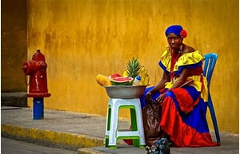

La Región Caribe es un área del territorio colombiano que se extiende por la zona costera al norte del país. Su historia se inicia con el establecimiento de las colonias españolas en las tierras colombianas. Algunas características de la región incluyen la presencia del mar Caribe, el mestizaje en la comida, la importancia comercial e industrial, y el acento común. Además, el vallenato es un baile tradicional de la región
Soy una persona serie, trabajadora...
| Días de la semana | Actividad |
| lunes | Entregable 1 |